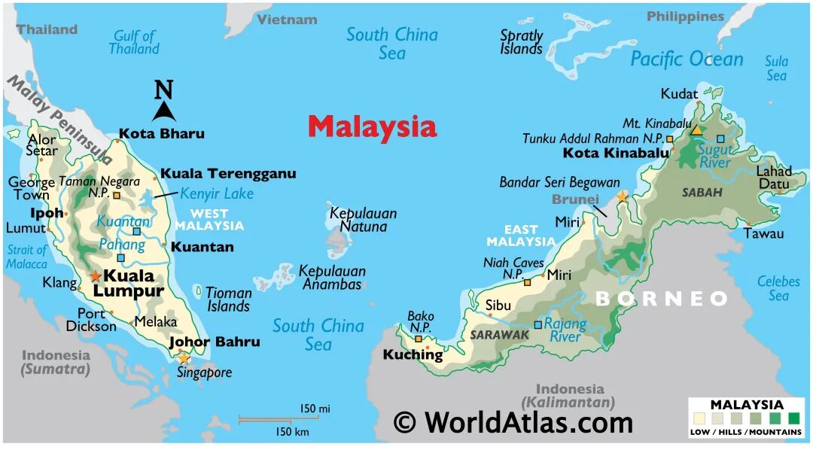
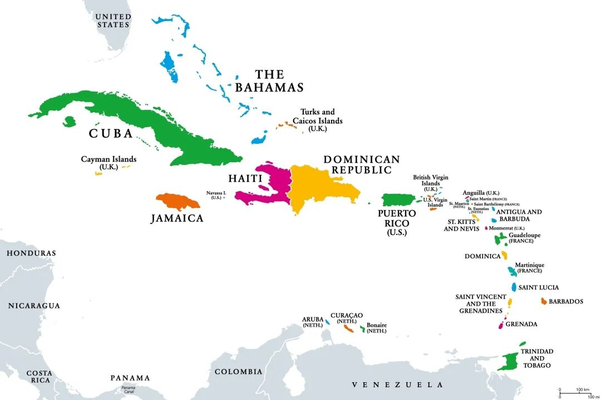
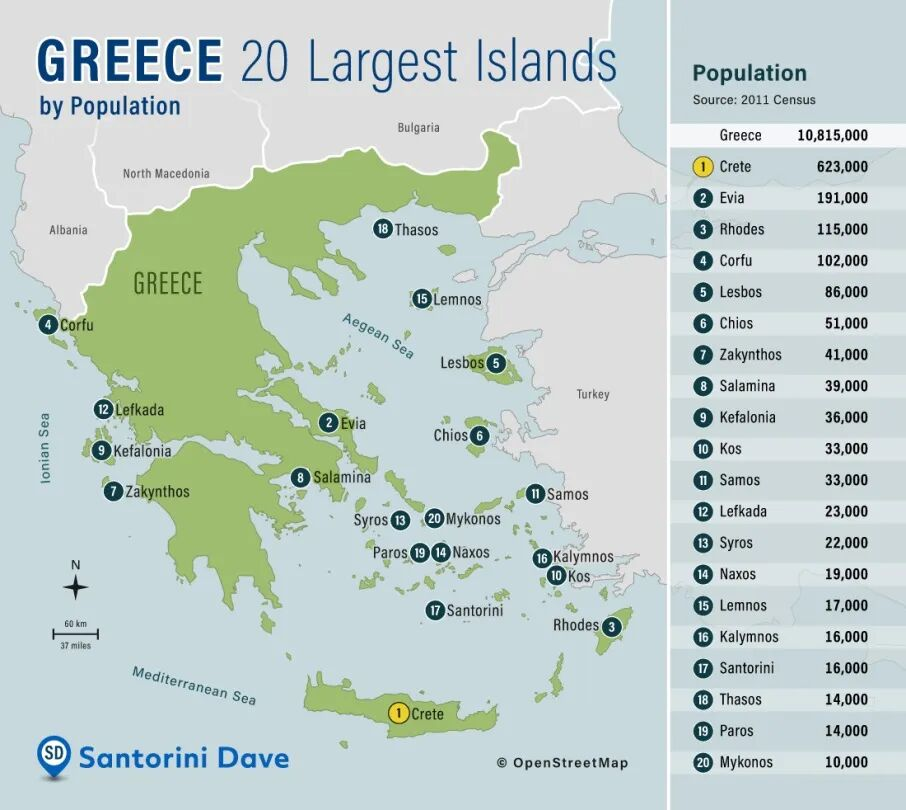
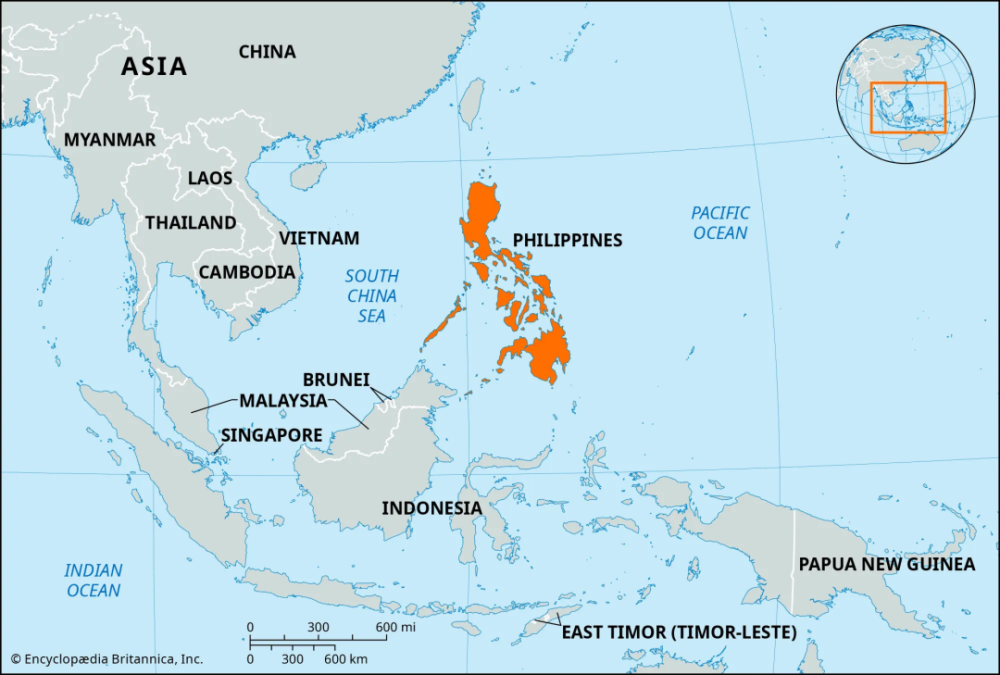

“每一件‘时事’包含着不同的原始运动和不同的节奏，
今天的时间既始于昨天和前天, 又始于遥远的过去。”——布罗代尔
01
引言
乍看标题，颇有地理环境决定论的意味。诚然，区域内的地形、资源、气候、生态环境会在不同程度上影响地区的社会经济发展方向。尤其对群岛国家而言，四面环海的处境和被海洋割裂破碎的国土塑造了独特的社会经济游戏规则，也限制了当权者们的政治选项，使得群岛国家的制度构建、经济发展往往显著区别于大陆国家。
历史来到本世纪，群岛国的境遇略显哀颓：希腊几经衰荣，而如今陷入债务危机、成为欧盟拖油瓶；菲律宾以其地方动荡、家族政治笼罩而闻名世界；印度尼西亚在上世纪末爆发“黑色五月暴动”，随后陷入长达十余年的动荡和沉沦；马来西亚政局经历多年跌宕起伏，在近期才逐渐恢复稳定；而加勒比地区的群岛国则更是深陷毒害和贫穷的泥潭——如今，群岛国们都没能坐上布林肯口中的国际“餐桌”，而更多成了“菜单上的国家”。在布罗代尔著名长时段理论的视角下，群岛国的哀颓历史在数百年的尺度上是静止的，其间短促的刺杀、数日的政变、乃至十余载的政治经济动荡都不过是根源于历史潮流的一阵涟漪，而历史流动的方向、历史运作的逻辑则已然被群岛地理、人地关系所框定。

群岛国之一马来西亚
然而，一如从生产力和个人、偶发事件影响力等角度对布罗代尔的批判，我并不完全同意长时段理论的观点。在地区间相对独立、生产力落后的早期，地区内地理环境确能如布罗代尔所言，在历史长期上起着经常的、深刻的作用。但随着马其顿王国吞并希腊群岛城邦，古中国将影响力射向南方诸岛，哥伦布将加勒比群岛、南亚诸岛串入西方经济，以及数次工业革命的推进，群岛国历史的驱动力也发生着深刻的转变。
在我看来，群岛国国土狭小割裂的域内地理环境确实在早期就塑造了它们地方政治势力林立的境况；而随着地区间隔离被逐渐打破，群岛国往往缺乏强有力的中央政府应对外力，在域外势力的政治影响、经贸互动乃至殖民下，区域内外势力互动——区域间地缘环境则更多成为了群岛国历史的主要驱动力。群岛国今日的悲歌尽管源于地理，但未必是地理塑造的不可逃脱历史的一部分，而可能是地缘塑造下的新历史的开端，群岛国们的命运也会随着今日地缘格局的剧变而各有衰荣。
02
群岛国的悲歌
（一）无力亦无处独善其身
从古至今，岛国的独特地理、地缘环境催生了诸多独特的政治经济制度，如英国脱离于欧洲大陆而实行的离岸制衡策略、日本基于岛内资源有限实行的军国主义扩张策略。但仅从资源、气候等地理因素却不能完全解释其策略制定：若英国所面对的欧洲大陆并非强国林列、日本所毗邻的清朝并不孱弱腐败，它们的制度策略未必仍如今天一般，也即地缘因素同样是解释其历史发展的必需要素。而在不同岛国之中，群岛国受地缘因素影响只会更大。一方面，不同于英国、日本等拥有较大主岛的大岛国，群岛国国土被海洋割裂支离破碎，地区城邦、部落割据，在域外实力到来时往往没有强有力的中央政府进行应对。即群岛国的内部地理因素本就使其难以对抗地缘因素影响。另一方面，除开国内因素，主要群岛国的地缘区位也会让它们更多地被域外势力接触、介入。板块活动使得群岛多伴大陆而生，并构成海峡等重要关口：如古希腊南面爱琴海，北邻欧洲大陆、毗邻马其顿王国，东接亚洲大陆；菲律宾、马来西亚、印度尼西亚等国则处太平洋、印度洋之间，扼守诸多船队航线左右；中美洲、加勒比群岛于南美北洲之间，且是三角贸易航线的重要落脚点——随着周边国家的发展，群岛国都将或主动或被动地卷入地缘关系中。从而，由国内地理和地缘区位因素使然，群岛国既无力、也无处独善其身。

加勒比群岛地图与国家
（二）地理埋种、地缘培果
尽管地理因素确实塑造了群岛国历史早期相近的政治格局局面，上述群岛国今日的凄凉境遇也有所相似，但究其过程却是在不同地缘因素下以不同机制发展而来的。
古希腊：英年早逝，卷入帝国兴衰
现代希腊共和国坐落于爱琴海两岸，国土主要由希腊半岛南部和爱琴海上星罗棋布的2400余座岛屿构成。虽不算完全的群岛国，本文将其纳入讨论范围主要在于古希腊城邦在希腊半岛的占比小于现代希腊、岛屿占比更大、且实际上更多地被海洋分割。公元前8世纪至公元前6世纪间，希腊土地上主要生活着5个部族，各自均占有有一定数量岛屿，其中爱奥尼亚人、多利亚人更是几乎全部生活于爱琴海的岛屿上。

希腊地图
古希腊在爱琴海上的群岛以多种形式促成了城邦政治模式的形成（吕平顺，2001;王杨，2013）：首先，海洋、山脉将古希腊分割为诸多狭小、独立、人口有限的地理单元，这既有助于内部社会关系的密切、构建城邦政治，也限制了城邦间的互相吞并，如迈锡尼人在多利亚人南侵时战败，但仍能退守克里特维持存在。因而，古希腊的多岛地理环境使其中不易形成大一统的专制帝国。其次，古希腊土地较为贫瘠，而爱琴海群岛与希腊半岛、爱琴海群岛之间的距离又并不遥远，这催生了古希腊城邦间的横向交换经济。稳定繁荣的经商关系有助于培养平等观念、促成民主政治（吕平顺，2001），而经商致富使得土地并不如在东方那般寸土必争，城邦发动兼并战争的需求并不强烈，继而也限制了大一统专制帝国的形成。
若以公元前30年罗马灭亡最后一个希腊化国家托勒密王朝视为古希腊的终结，那古希腊也真算英年早逝了。当然，其“早逝”是一个从公元前338年马其顿控制古希腊全境开始的持续过程，期间域外实力对希腊的影响不断扩大。实际上，在马其顿入侵之前，古希腊已屡遭域外势力介入，如多利亚人由域外侵入，稳定后形成古希腊部族的一支；波斯帝国对希腊进行了两次入侵但被挫败。整体而言，古希腊城邦此时仍然是是爱琴海棋盘上的棋手。但马其顿的入侵首次控制了希腊的绝大部分领土，爱琴海棋盘被亚历山大夺走，希腊人转而变成棋盘上的棋子。此后希腊先后成为罗马、东罗马帝国、奥斯曼帝国的一部分，不再是独立的国家，而是更大帝国统领的疆土。而当1832年希腊王国在英法俄等列强的介入下成立时，希腊的内政已经与地缘格局密不可分，如希腊王国首任君主奥托便由列强指定。随后的近一个半世纪中，希腊王国动荡不堪，分裂、刺杀、复辟、独裁轮番上演。至1974年确立共和体制，希腊后续也荣光不再，2009年陷入近十年的希债危机，时至今日仍不时被视为欧盟的拖油瓶。
自马其顿入侵以来，希腊始终缺乏强有力的、独立自主的政府，但这不应被归因于海洋割裂的地理因素影响。帝国对希腊的吞并并不出于对希腊独特地形的兴趣使然，而更多在于其地缘区位。而帝国对希腊的管制也并不以其地理要素为主导，而是帝国整体利益和意志的地缘因素的落实。同样地，希腊王国在列强的介入下成立，君主由列强指派，希腊的政治经济风向标同样不是其自身利益，而与列强息息相关。
整体看来，希腊的群岛地貌却在古希腊时期塑造了城邦政治格局，但这地理要素所埋种子的后续生长却实际由地缘要素接管，希腊经济史本身便是地缘政治史。
菲律宾：家族鹬蚌相争，他国渔翁得利
毫无疑问，菲律宾是一个典型的群岛国家。菲律宾共有大小岛屿7000多座，其中吕宋岛、棉兰老岛等11各主要岛屿占全国总面积的96%。十四世纪之前，菲律宾群岛尚未形成国家，政治势力主要为散布独立的土著部落。期间，虽中国虽多次抵达菲律宾境内，但并无插手干预的兴趣。十四到十五世纪期间，一批马来人从已经伊斯兰化的马来半岛迁入菲律宾，在菲律宾诸岛创立一系列伊斯兰苏丹国，如苏禄岛上的苏禄国、吕宋岛上的吕宋国。与古希腊相似，菲律宾受海洋分割地理因素的影响，直至遭受外部入侵前都是松散的国家组合，并未出现统一全国的专制政权和军队，自然也无从抵抗15世纪初西班牙的殖民。西班牙在菲律宾实行封建专制的殖民统治，在地方实行赐封制度，将封地范围内征收赋税的权利赋予在殖民中有“功”者，培养了一批大肆赋税盘剥原住民的“菲奸”，激起了数十次遍及群岛的反殖民起义。1898年美西战争爆发，次年菲律宾地主资产阶级右翼阿奎纳宣告菲律宾共和国成立，而紧接着美国便发动侵菲战争镇压阿奎纳领导的革命，菲律宾丝滑地转为美国人的殖民地。

菲律宾地图
区别于西班牙的分封政策，美国采取了培养代理人的新殖民主义政策。美国基于菲律宾群岛的地理分割，在不同区域培养当地地主资产阶级亲美集团，保持控制权。这在极大程度上才是菲律宾今日家族政治的根源。后续二战爆发后日本侵占菲律宾，战后美国名义宣布给予菲律宾独立，但在实际上继续扶植菲律宾地方家族势力。首先登台的罗哈斯政府和季里诺政府均为家族势力，实行了屈从美国的内外政策，允许美国在菲律宾保留军事基地并享有治外法权。1965年，臭名昭著的菲奸老马科斯上台，开始了长达20年的独裁统治。老马科斯是美国扶植下的吕宋岛家族势力，期间老马科斯政权在外交政策上追随美国，在政治上实行高压统治，在经济上在七十年代实现了较大发展，但大肆贪腐敛财百亿。1986年选举失败后，老马科斯出逃，直飞美国。而后续登台的阿基诺夫人、阿基诺三世、杜特尔特、小马科斯等7任总统也全部来源于菲律宾不同的地方家族。
美国在殖民菲律宾期间实行新殖民主义政策，在现代菲律宾共和国成立后继续通过系列政治经济手段扶植地方家族、培养代理人，塑造了菲律宾如今的家族乱斗局面，并从家族鹬蚌相争中渔翁得利。其中，特定地方家族通常稳定掌控一定省、市范围选区，并在此基础上相互联合、斗争，谋取总统权位。如菲律宾前总统杜特尔特便属于掌握棉兰老岛的杜特尔特家族，其自身借助家族支持任职棉兰老岛最大城市达沃市市长25年，以其雷厉风行的铁腕手段给国内外留下深刻印象。2022年菲律宾大选时，杜特尔特家族与马科斯家族联手参选，但联合胜选后不久，马科斯家族开始了对杜特尔特家族的清算。菲律宾家族斗争的风云下，是美国构筑的利于控制的政治架构，和美国利益的指导。如家族政治下，当权者的政治收益由家族垄断，风险却由全国承担，这使得当权者更乐于采取高风险行径。在我看来，在中美博弈的大背景下，小马科斯政权近期在南海的挑衅便更多是服务于美国利益。
马科斯-杜特尔特在 2022 年菲律宾大选中的联盟画面
整体而言，菲律宾如今的家族政治斗争虽借群岛国地理基础之便，但其发展实际上由地缘因素、域外实力所控制，并不以菲律宾国内利益为导向，脱离了本国地理要素指导的政治经济发展逻辑。
此外，殖民势力同样在“离天堂太远，离美国太近”的加勒比群岛国，以及东南亚其他群岛国今日的发展路径上烙下了深刻的烙印。一如Acemoglu(2001)所讨论的，不同程度的域外实力殖民以不同形式深刻塑造着被殖民国今日的发展路径。今日群岛国由域外地缘势力的所塑造的政治经济格局，不应以地理来为地缘所得利益作辩护。
（三）挣脱地理桎梏
至此，我们似乎仍能够辩解说：“群岛国的历史发展受域外实力介入而变向，但若域外实力的行为仍能尤其地理因素解释，那便可以‘多国地理环境联合决定论’替代‘地理环境决定论’，而延续地理环境的解释力了？”
在我看来，“地缘”与“多国地理”的核心区别就在于其不仅考虑了地的因素，还包含了政治经济条件、乃至偶发事件影响的意涵。时至今日，人类科技、经济的发展已经有能力挣脱地理的桎梏，金融交易可以近乎无延时地跨国进行，信息技术使得俄罗斯这般远大于古希腊的国家也可以进行投票选举，而如果公共部门愿意，也具备技术条件将电线拉到荒郊野岭的房屋前……地理本身或更多以市场、成本、资源等政治经济要素，和业已塑造的社会文化形式继续参与国家、企业、个人的决策，但一段时间的旱灾未必再如古代那般会造成全国饥荒和朝代更替，海洋阻止不了军队跨向对岸，地理的影响力存在，但弱化了，地理不再作为游戏规则主体，而只是规则之一。相比之下，区域内外政治经济要素等构成的地缘要素，对群岛国今日的悲歌或具有更强的解释力。
从当权者决策视角来看，农业经济社会中，农业是国家的基干，与政府的财政赋税息息相关；同时相对落后的技术条件也不允许当权者将地理环境抛之脑后，进而自然地理条件也会更多地反映在决策中。但在技术条件发展迅速、国际专业化分工明显的今天，对于缺乏独立的群岛国而言，对岸大国的局势争端、本国的金融账户运作等往往比地理条件本身更关乎政权的存亡，“外交决定内政”的群岛国不在少数。
03
时间与历史，地理与地缘
“每一件‘时事’包含着不同的原始运动和不同的节奏，今天的时间既始于昨天和前天, 又始于遥远的过去。” ——布罗代尔
再重看文题所带布罗代尔的论述，实在是颇具诗意。
布罗代尔的长时段理论将砌成历史的时间砖块分为三层（孙晶，2002）：首先是短时段——个人时间，这是历史的基本碎片，是无数急促的、紧张的事件；其次是中时段——社会时间，是数月数十年的政治、经济、文化的历史，政治局势的周期、经济的波动都吸纳其中；最后是长时段——地理时间，是长达一两百年的，由自然地理、人地互动构筑的稳定的、很少变动的历史。布罗代尔认为“人类及其经验无法超越地理结构、社会结构和思想文化结构的框架；作为支撑, 这些结构又具有长期稳定性特征, 它们决定着历史的进程。”布罗代尔并不否认人在历史进程中的作用，但进将其局限在中短期，乃至政治经济动荡都只是历史中的涟漪，而自然地理环境则构成了历史长河两侧的堤坝，确定其流动方向。继而，他认为每一件中短期的事件都能在长期的、自然地理主导的长时段历史中找到解释，也即强调“今天的时间始于遥远的过去。”顺其观点推导，上文所述的地缘格局因素也不过是中短期的波动，其影响不会超脱于自然地理主导的长时段，是地理塑造的长期中的一个中短期。
但正如对其观点的批判所指，长时段理论忽视了人的主观能动性对于塑造政治经济、历史进程的影响，也忽视了生产力发展对于历史发展产生的革命性作用。从农业革命到第一次、第二次工业革命和今日的科技革命，生产力发展与政治经济发展相互交融、互相推进，已然影响了数千年的历史发展，在数千年间不断更新着政治经济的游戏规则。而一如第二部分所作的粗浅讨论，地缘包含的无数政治经济利益考量在事实上超越了地理环境，在数百上千年的尺度上塑造了群岛国的历史走向，在群岛国今日的悲歌中，地缘应当起着大于地理本身的作用。
因而在我看来，群岛国今天的历史未必是地理塑造的稳定长期中的另一个短期，而应当是地缘接手后，地缘主导新长期中的新短期，驱动历史前进的主要动力并不必须是始终唯一的。也即：
群岛国今天的时间始于遥远的地理过去，但更始于地缘的昨天和前天。今天的时间始于遥远的过去，但更始于昨天和前天。
随着如今全球地缘格局愈发动荡，战争、冲突阴云遍布，反全球化浪潮翻涌，缺乏独立自主的群岛国可能更难以掌握自己的命运，只能留在“菜单”，而抱团取暖的群岛国们或许更有可能争取坐上“餐桌”。
参考文献：
1.格雷戈里奥·F.赛义德著，吴世昌、温锡增译.(1979).《菲律宾共和国历史、政府和文明》（全二册），商务印书馆
2.吕平顺.(2001).论地理环境对早期人类社会政治体制的影响.社会科学家(05), 88-91.
3.靳艳.(2013).论希波战争后希腊城邦衰落的地缘政治因素.兰州大学学报(社会科学版)(04),54-59.
4.孙晶.(2002).布罗代尔的长时段理论及其评价. 广西大学学报(哲学社会科学版)(03),80-84.
5.王杨.(2013).布罗代尔长时段理论观照下的阿提卡[D].辽宁师范大学.

作者：向子扬